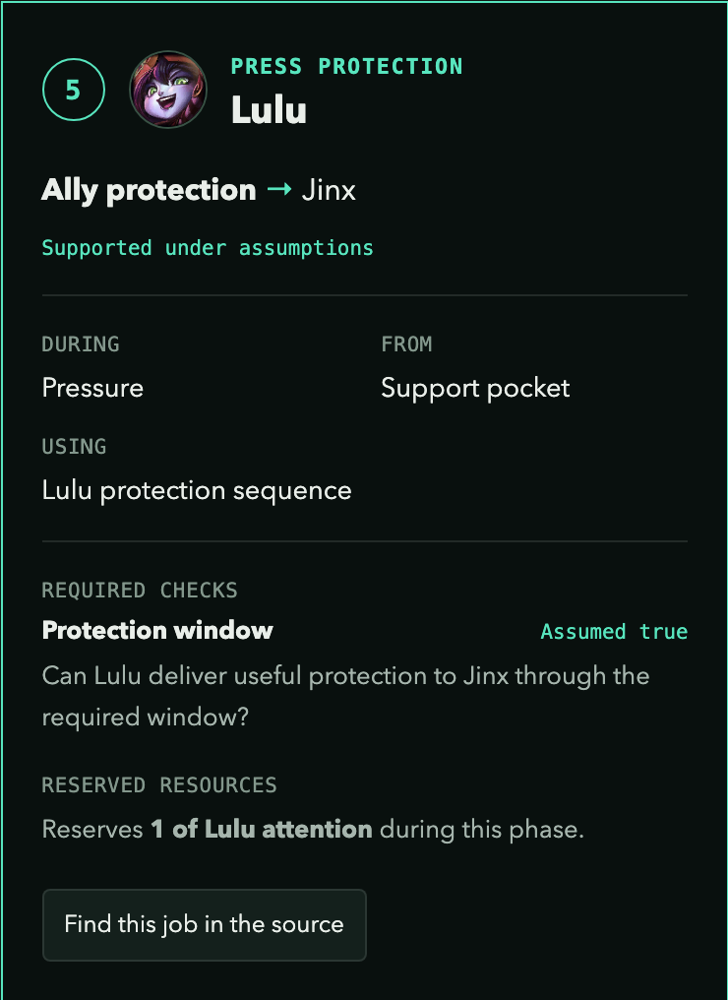
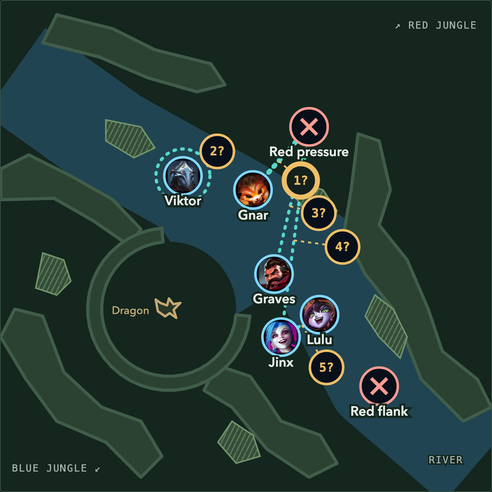
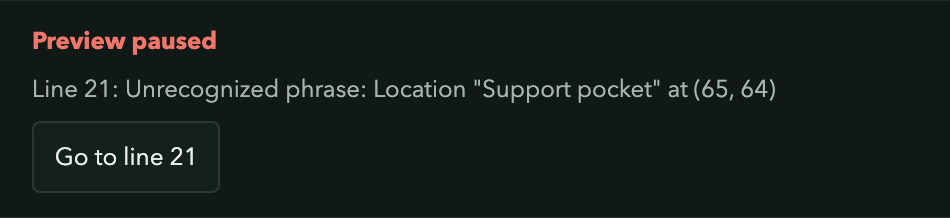
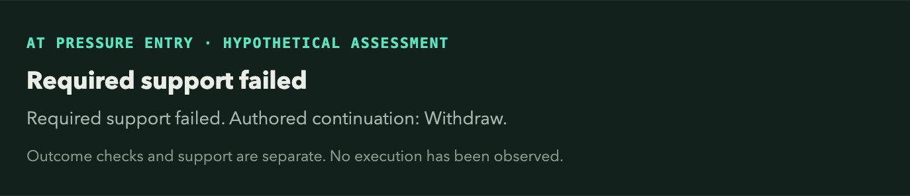
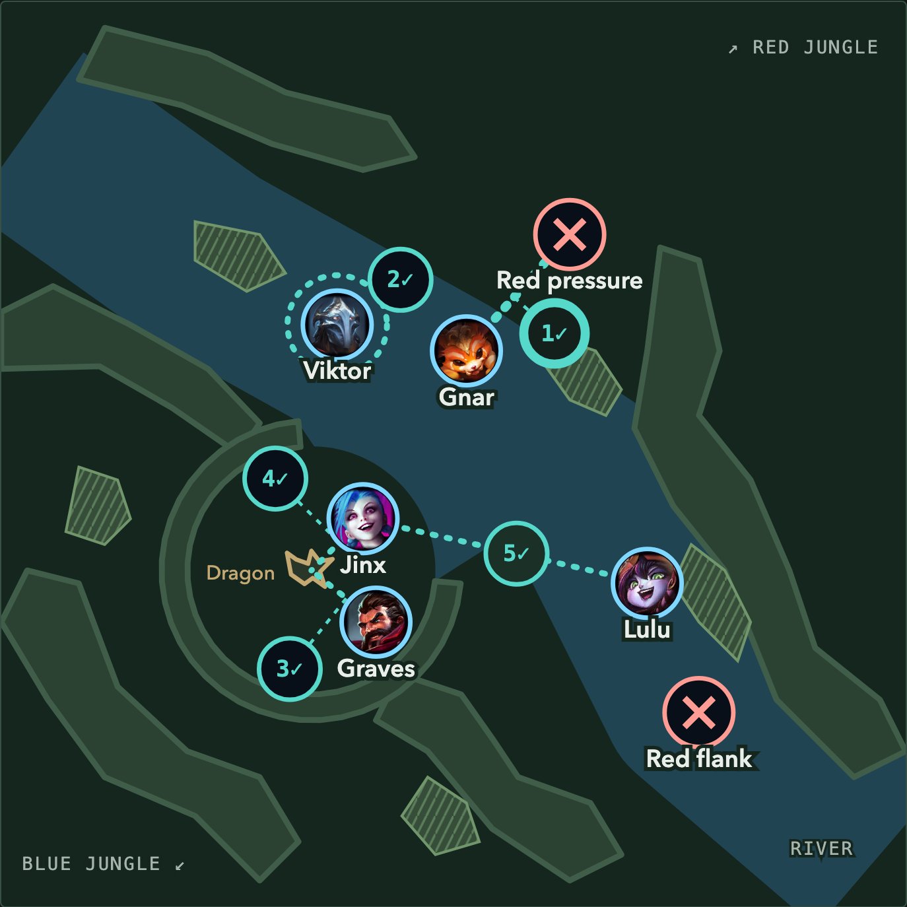

Blue has a connected idea for Dragon: Gnar threatens the front, Viktor covers an entrance, Lulu protects Jinx, and Jinx and Graves use the resulting attack window. If the opponent yields, the team must still connect that formation to a supported objective attempt. How would you explain those assignments to the people playing them?
Battleplan Studio turns written assignments into an editable map. Change a phrase, inspect the relationship it draws, and ask whether your proposed work still connects. This is the next step after Five Good Champions Can Still Make a Bad Team and Test One Change Before Rebuilding the Team: we move from exploring a composition's recorded contributions to authoring a particular plan for that team.
This is Battleplan maps, part 1: Dragon Contest, a beta introduction to the first map in a planned series. We intend to explore other scenarios with their own useful map areas and phrase patterns. This early version gives us a shared way to test what helps people plan. You can start here without reading the earlier articles.
The language is a small DSL, or domain-specific language: repeatable phrases for actors, jobs, positions, methods, and conditions. You supply the proposed plan and its assumptions. The editor checks the structure and shows their consequences. It does not observe a game or verify that an ability can execute the assignment.
{kind=link}
2. Give a Capability an Owner
Read Lulu's existing assignment:
Job "Press protection" in "Pressure" requires "Ally protection" from "Lulu" at "Support pocket" toward "Jinx".This is a compact planning sentence: Lulu supplies a job for Jinx, from a named position, during a named phase. The capability says what kind of work the plan needs. The remaining phrases say how we propose to supply it and what we need to check.
| Concept | In this assignment | Planning question |
|---|---|---|
| Strategic capability | Ally protection | What team-level job needs doing? |
| Provider and recipient | Lulu toward Jinx | Who does the work, and for whom? |
| Position and phase | Support pocket during Pressure | Where and when is it supposed to connect? |
| Method | Lulu protection sequence | What proposed action supplies the job? |
| Condition | Protection window | When could that contribution count? |
A basic capability describes a reusable mechanical tool, such as Shielding. A strategic capability describes a team-level job, such as Ally Protection. A shielding ability could help with that job when its delivery and timing address the relevant threat. The starter's method name is authored shorthand for a proposed contribution. This beta does not automatically match it to Lulu's ability records or validate a spell sequence.
These existing phrases connect the method and condition to the job:
Method "Lulu protection sequence" by "Lulu" provides "Ally protection".
Assign "Lulu protection sequence" to "Press protection".
Job "Press protection" requires check "Protection window".The source also reserves Lulu's attention for that responsibility. Resources let you state a limited budget for simultaneous duties. They can reveal conflicting assignments; they do not simulate cooldowns or player attention. Click map number 5 to scroll to Lulu's card under Who is responsible for what? Every responsibility is expanded, so you can compare the team's work together. Find this job in the source selects its declaration for editing.
Read the assignment behind a numbered relationship
{kind=link}

Open full-size image ↗All responsibilities remain expanded in the grid. This crop follows assignment 5: who supplies the job, to whom, from where, using what, and under which condition.
Captured from the working beta using the starter plan and the exact edits described here. The pictured controls are part of the screenshot. Positions, methods, and check values are authored hypotheses.
3. Move an Intended Position
Start each experiment from Restore example…, then select Pressure. That keeps the changes in the screenshots separate. Use Find a position to locate the Support pocket declaration. Replace this line:
Location "Support pocket" at (71.429, 64.286).with:
Location "Support pocket" at (65, 64).Coordinates run from 0 to 100, left to right and top to bottom. Changing a named location changes the intended positions that refer to it. Here, the same Support pocket is used across Form, Pressure, and Convert, so inspect those phases before keeping the edit.
Lulu moves left toward Jinx in the Pressure preview, and the protection relationship follows her. This gives us something concrete to discuss: does that assignment keep her within useful reach while leaving the rest of the formation viable? The drawing establishes no ability range, safe route, or successful protection.
Change the anchor; inspect the new relationship
{kind=link}

Open full-size image ↗Only the Support pocket coordinates changed. Lulu’s intended position and its protection link redraw immediately. The question marks reflect the required review of retained assumptions after a structural edit.
Captured from the working beta using the starter plan and the exact edits described here. The pictured controls are part of the screenshot. Positions, methods, and check values are authored hypotheses.
A changed plan needs its assumptions reviewed. A structural edit makes the retained assumptions unresolved. Read the checks again before choosing Use the written assumptions for this revision. That button approves the hypothetical values for the revised plan; it supplies no game-state evidence.
If you omit the final period, the editor identifies the incomplete phrase and pauses the preview. The last valid map remains visible with a stale-preview warning. Use Go to line to repair it, then restore the period to resume the live update.
A phrase error leaves a visible repair point
{kind=link}

Open full-size image ↗This capture removes the period from the location declaration. The app retains the last valid preview and marks it stale. Go to line returns to the incomplete phrase; repairing it resumes the live preview.
Captured from the working beta using the starter plan and the exact edits described here. The pictured controls are part of the screenshot. Positions, methods, and check values are authored hypotheses.
{kind=link}
5. Ask What Happens When Support Fails
Restore the example again and select Pressure. Use Find assumptions to find the written check values. Replace the Protection window assumption with:
Assume "Protection window" is false.The question attached to that check is whether Lulu can deliver useful protection to Jinx through the required window. For this experiment, we assume she cannot. The starter already includes a response:
On failed support in "Pressure", go to "Withdraw".The assessment changes to Required support failed and names Withdraw as the authored continuation. The preview stays in Pressure until you choose another phase. No champion has moved and no retreat has been observed.
A failed premise changes the authored continuation
{kind=link}

Open full-size image ↗This is a hypothetical failed-support case. The app names the plan’s continuation while leaving the chosen preview in Pressure. It has observed no retreat and moved no champion automatically.
Captured from the working beta using the starter plan and the exact edits described here. The pictured controls are part of the screenshot. Positions, methods, and check values are authored hypotheses.
Compare all three possible values on the restored plan:
| Protection window assumption | What this example establishes | Authored continuation |
|---|---|---|
| true | Required support is assumed available; Enemies yielded remains unknown. | Wait in Pressure for its completion check. |
| false | A required protection condition fails. | Withdraw. |
| unknown | Required support is unresolved. | Review. |
Support and completion answer different questions. Having the proposed tools and conditions in place leaves the result to be established. The true case does not mean enemies yielded. The false case does not make withdrawal safe: Withdraw has its own exit-route and exit-cover checks.
These are the starter's authored branches, not universal rules for every Dragon fight. They expose a planning question your team can answer: what should we do when the protection assignment fails, and what would that response itself require?
6. Recheck the Objective Handoff
Restore the example, then select Convert. Find these existing phrases:
In "Convert", copy positions from "Pressure".
In "Convert", place "Jinx" at "Dragon edge".
In "Convert", place "Graves" at "Dragon side".The first phrase keeps the starting formation. The next two override Jinx's and Graves's intended positions for this phase. Separate Finish jobs assign their objective damage toward Dragon while Lulu retains a protection responsibility and Gnar and Viktor retain cover responsibilities.
In this preview, Jinx and Graves have Dragon assignments, while the protection relationship must still connect to Jinx's new position. The map makes the handoff visible. Copying positions carries no evidence that the team can safely arrive or finish.
The same team takes on the next set of jobs
{kind=link}

Open full-size image ↗Convert is an intended snapshot with its own checks. The new objective-damage links and Jinx’s changed location make the handoff explicit. The preview leaves Dragon secured unresolved.
Captured from the working beta using the starter plan and the exact edits described here. The pictured controls are part of the screenshot. Positions, methods, and check values are authored hypotheses.
Inspect Finish arrival, Finish damage, Finish protection, Finish cover, and Finish resources. The starter gives them illustrative assumptions, while Dragon secured deliberately remains unresolved. A supported attempt and a completed objective remain separate findings.
For your own first plan, keep this small loop: name the job, assign its provider and method, inspect the position, state the condition, and write the response if it fails. Change one premise at a time. Save a copy of a useful source version before restoring the example. Leave the session with a preparation question or assignment the team can actually discuss.
7. Shape the Next Battleplan Map
Dragon Contest is our first beta map. We want the community to help us decide which planning situations and language patterns deserve attention next. Would a Baron setup, siege, retreat, or another scenario help your team reason? Which responsibility was difficult to express? Which part of the map made an assumption clearer, and which part could mislead a reader?
Tell us what would be valuable in your planning. The most useful feedback includes a small source excerpt, the selected phase, the one change you tried, and what you expected to see. A screenshot of the actual result helps us understand the gap. Avoid sharing private team plans or personal information you do not intend to make public.
We will use that feedback to refine the language, the map, and the explanation together. For now, the useful outcome is a plan whose assignments and uncertainties are easier for other people to inspect. Open the beta, change one phrase, and see which question becomes easier to ask.